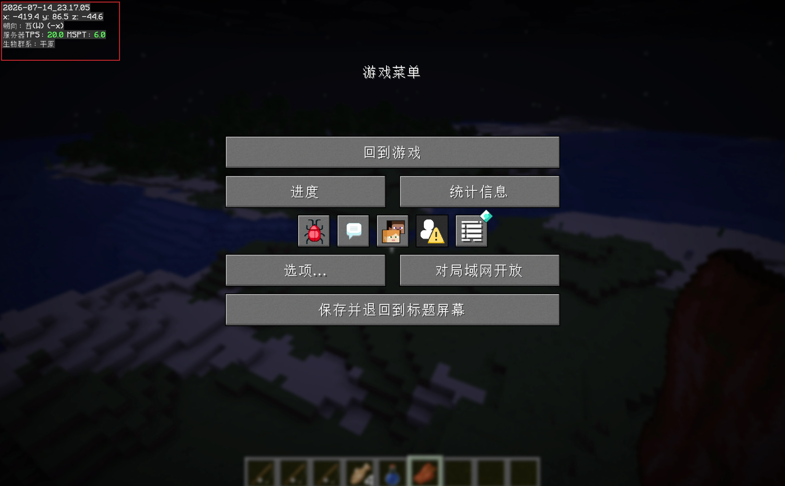
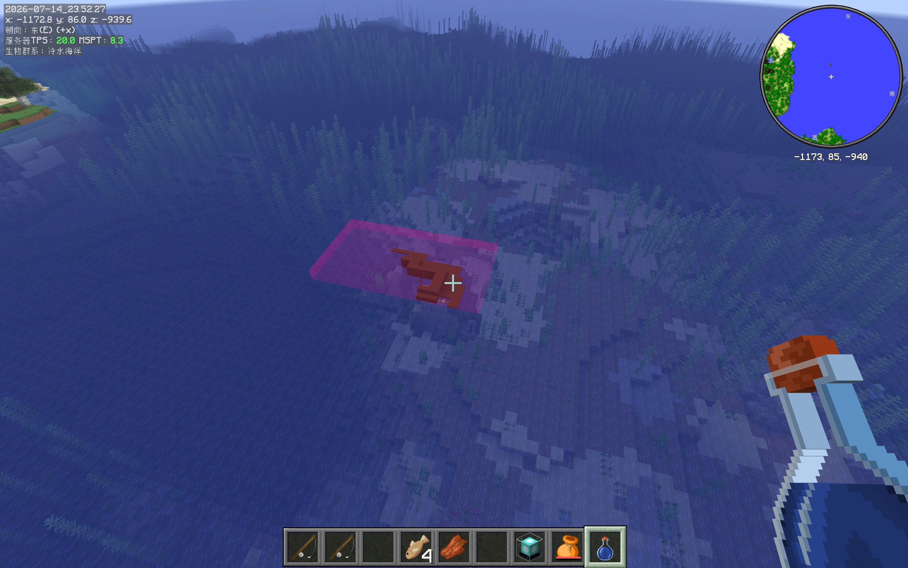
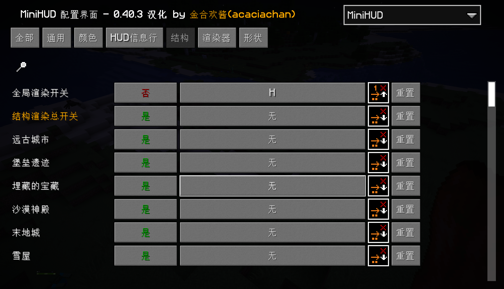
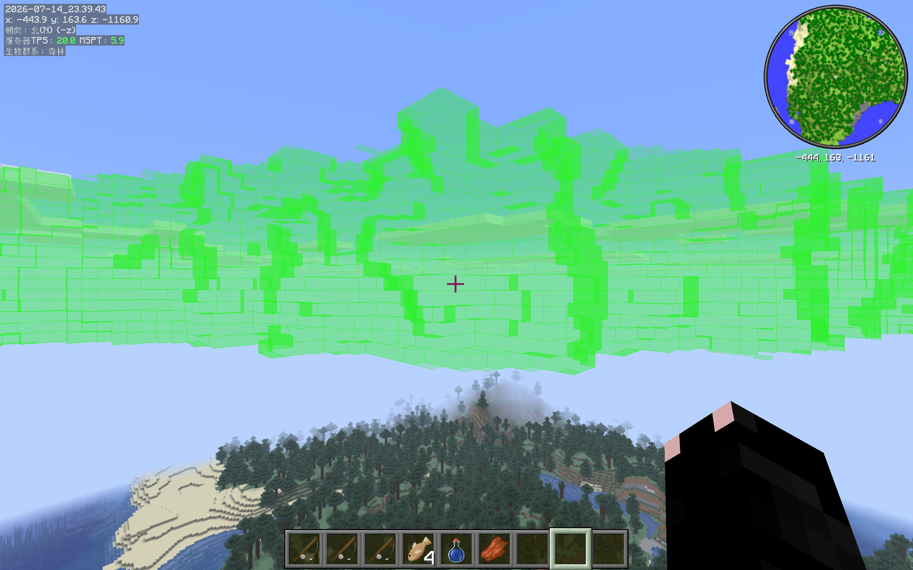
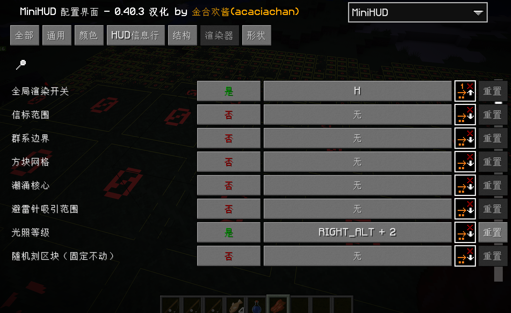
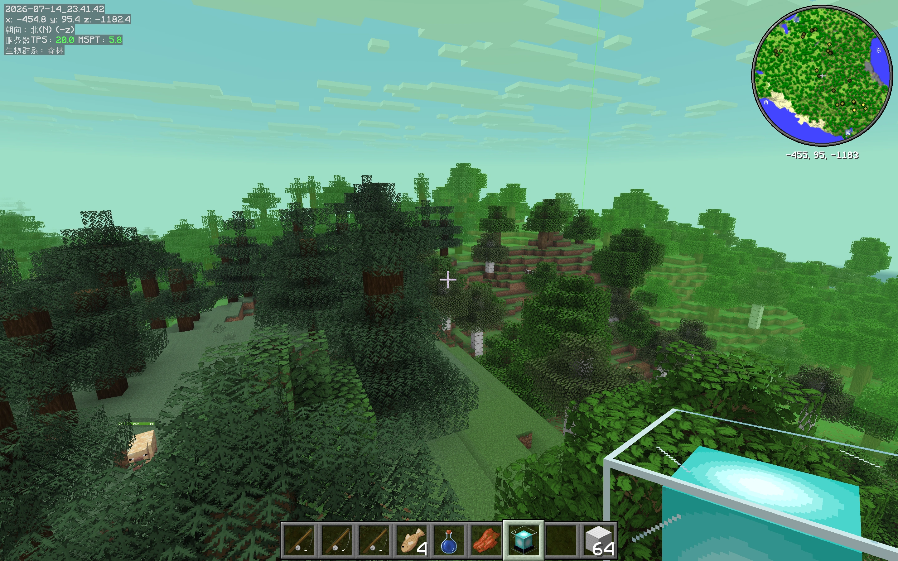
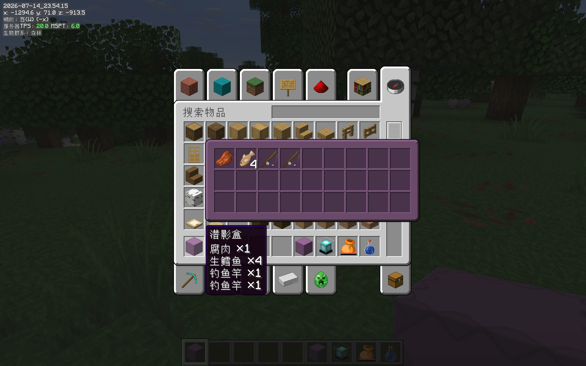
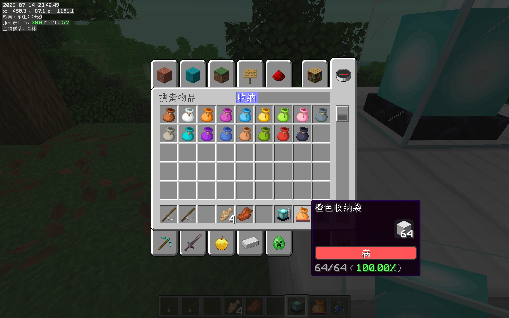

01 / 08MiniHUD · Overview
◫ MINECRAFT MOD 介绍
一个 MOD看清隐藏规则
信息、结构、范围、施工和预览，直接画进游戏画面
📊 信息 HUD💡 环境与网格◎ 范围与边界📐 建筑与形状🎒 预览与检查
真实游戏场景讲解 · ← → 翻页 · 空格下一页
02 / 08Your Mission
先选任务，再选功能
遇到什么问题，就开什么功能
MiniHUD 不需要背菜单。沿着一次冒险、工程和基地维护的过程，找到此刻真正需要的能力。
H 主渲染开关 · H + C 配置入口 · 快捷键可以修改
安装关系 · 26.2 基线
Fabric Loader + MiniHUD + MaLiLib
三者都要匹配 Minecraft Java 版 26.2；不同版本的菜单和功能可能不同。
客户端：MiniHUD + MaLiLib
多人服按需：Servux 数据支持
03 / 08Scenario 01 · Info
场景 1 · 日常游玩
总在按 F3？把常用信息留在眼前
把 MiniHUD 当成一张会随任务变化的便签：真实时间、坐标、朝向、TPS/MSPT 与群系够用就好。

现实时间 · 坐标 · 朝向 · TPS/MSPT · 群系
真实游戏效果
04 / 08Scenario 02 · Explore
场景 2 · 外出探索
结构藏进地形？打开已有数据的边界
探索到附近后，用结构边界中的主边界和组成部分确认完整范围；图中的水下遗迹只是一个实际例子。


洋底结构：边界框把埋在水下的范围标出来
实际结构数据
05 / 08Scenario 03 · Site
场景 3 · 工程选址
选址怕踩坑？一次只开一层覆盖
同一片地，从不同覆盖层看会得到不同答案：哪里暗、边界在哪、工程是否跨过区块或群系。


1 · 找风险用光照数字或颜色定位可能生成生物的位置。
2 · 对边界方块网格、区块与群系边界决定工程口径。
3 · 看机制史莱姆区块、随机刻和可生成列回答运行条件。
覆盖层只显示规则，不会替你处理现场
一次只开一层
06 / 08Scenario 04 · Range
场景 4 · 机制规划
范围全靠估？先分清盒子、球和网格
装置用立体边界，方块更新看区块，生物机制常用球形距离——先分清是谁的规则。

可见的信标边界
信标：用真实范围覆盖层确认作用边界
真实游戏效果👤
24 格 · 32 格 · 128 格
常见参考，不是所有规则的唯一答案
07 / 08Scenario 05 · Build
场景 5 · 开始施工
圆心半径难确定？先画进世界再动手
先用圆形 / 圆柱体确定圆心、占地和半径，再扩展到高度、生成空间和锥体设计。

立方体中心立方体圆形 / 圆柱体直线（方块化）球体（方块化）
可调整生成球体可生成球体（>24）可消失球体（>32）立即消失球体（>128）可生成球体（Y 轴裁剪）椭球体可生成球体
08 / 08Scenario 06 · Base
场景 6 · 基地管理
整理和排查太慢？少开界面先确认
回到基地后，用预览整理物资、确认目标状态；机器效率异常时，再沿着实体、距离与服务器数据继续检查。


村民交易快速确认附魔、价格与交易内容。
目标实体生命、状态、品种与特殊属性。
目标方块蜂巢数量、熔炉经验与方块属性。
现场条件光照、随机刻、生成距离与 Mob Cap。
客户端负载FPS、内存、实体、方块实体与已加载区块。
服务器状态延迟、TPS/MSPT 与同步数据是否可用。
默认按住 Shift 悬停预览，触发方式可以修改
MiniHUD 预览
遇到问题，按场景找功能
收藏这份问题清单
迷路 → 信息 HUD遮挡 → 结构边界
选址 → 环境覆盖估算 → 范围参考
施工 → 形状参考整理 → 预览与检查
关注我，继续分享实用 Minecraft 模组和生存技巧。